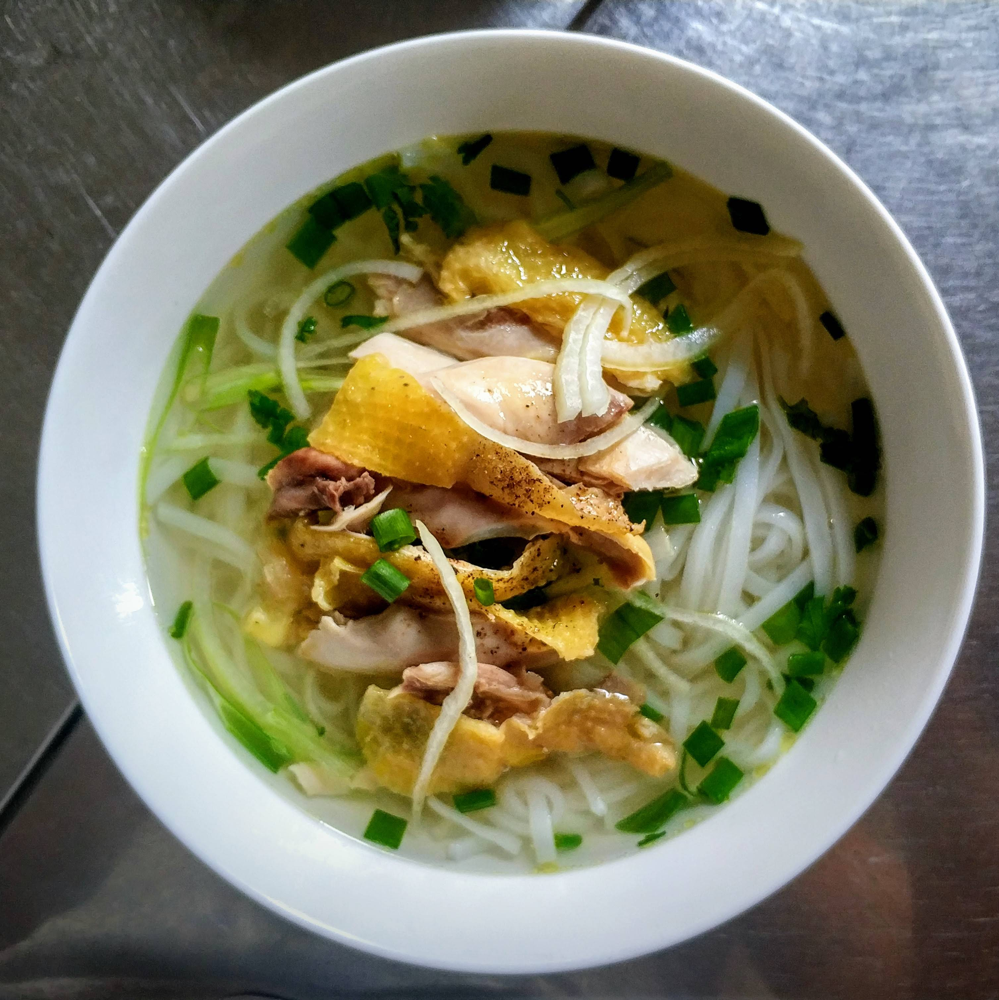

Vietnamese Pho

Description
This recipe has been passed down through three generations of hard working hands.
Created by my grandfather "Granpa's Bussin' Pho" is sure to make you go uh uh yeah!
Ingredients:
- 4 pounds beef soup bones
- 1 onion, unpeeled and cut in half
- 5 slices fresh ginger
- 1 tablespoon salt
- 2 pods star anise
- 2 ½ tablespoons fish sauce
- 4 quarts water
- 1 (8 ounce) package dried rice noodles
- 1 ½ pounds beef top sirloin, thinly sliced
- ½ cup chopped cilantro
- 1 tablespoon chopped green onion
- 1 ½ cups bean sprouts
- 1 bunch Thai basil
- 1 lime, cut into 4 wedges
- ¼ cup hoisin sauce (Optional)
- ¼ cup chile-garlic sauce (such as Sriracha®) (Optional)
Steps:
- Preheat oven to 425 degrees F (220 degrees C).
- Place beef bones on a baking sheet and roast in the preheated oven until browned, about 1 hour.
- Place onion on a baking sheet and roast in the preheated oven until blackened and soft, about 45 minutes.
- Place bones, onion, ginger, salt, star anise, and fish sauce in a large stockpot and cover with 4 quarts of water. Bring to a boil and reduce heat to low. Simmer on low for 6 to 10 hours. Strain the broth into a saucepan and set aside.
- Place rice noodles in large bowl filled with room temperature water and allow to soak for 1 hour. Bring a large pot of water to a boil and after the noodles have soaked, place them in the boiling water for 1 minute. Bring stock to a simmer.
- Divide noodles among 4 serving bowls; top with sirloin, cilantro, and green onion. Pour hot broth over the top. Stir and let sit until the beef is partially cooked and no longer pink, 1 to 2 minutes. Serve with bean sprouts, Thai basil, lime wedges, hoisin sauce, and chile-garlic sauce on the side.
Return to top
Return to main page